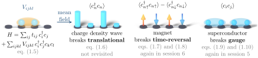

Page 12 of 12 of this session
1.16 Closing summary
This session needed nothing from before except the Schrödinger equation of a single particle, which we wrote in two ways in Section 1.4. From it we built the language and the first tool of the course, and we saw the following.
Quantum materials realize a very large range of phenomena, such as topological order, fractionalization and correlated superconductivity, that no single atom shows on its own. The central question of this course is how these phenomena emerge from electrons in a lattice.
Second quantization is a language that treats in the same way systems with a fixed number of particles and systems where this number fluctuates. It is built from creation and annihilation operators that satisfy the anticommutation relations (1.3).
The many-body Hilbert space grows as \(2^L\) for spinless fermions and as \(4^L\) with spin, as we saw in Section 1.9. For this reason interacting problems need a systematic approximation and not brute-force diagonalization.
Spontaneous symmetry breaking is the general phenomenon where a symmetric Hamiltonian gives an asymmetric ground state in the thermodynamic limit. We can classify states of matter by the symmetry that they break, which is time reversal for magnets, inversion for ferroelectrics and gauge symmetry for superconductors, and each case has its own emergent quasiparticle. A magnet has the formal definition of (1.4). Topological materials show that this classification does not cover all cases.
Mean-field theory gives the practical method. We factorize the interacting Hamiltonian (1.5) by taking an expectation value of part of the quartic term, and then we solve the resulting single-particle problem self-consistently.
The same procedure, applied to three different interaction channels, gives three different symmetry-broken states. The first is a charge density wave from (1.6), with broken translational symmetry. The second is a magnet from (1.7) and (1.8), with broken time-reversal symmetry. The third is a superconductor from (1.9) and (1.10), with broken gauge symmetry. Superconductivity has its own full session in Session 5 and magnetism in Session 6, and the versions of this session are a first pass.

After this session we can do the following tasks, and each of them has the section that teaches it.
- Say why a state with a fluctuating number of electrons, such as a dot in a superposition of zero and two electrons, needs second quantization. This is in Section 1.4 and Section 1.5.
- Write a hopping between two sites with creation and annihilation operators, and find the levels of the two-site problem. This is in Section 1.6, and the steps are in Section 1.7.
- Show that \((c_i^\dagger)^2=0\) follows from the anticommutation relations (1.3), and count the states of two spinless particles on two sites, for fermions and for bosons. This is in Section 1.7.
- Count the states of the Fock space, \(2^L\) for spinless fermions on \(L\) sites and \(4^L\) for spinful ones, and say why the full diagonalization of the \(2^L\) states stops near \(L\approx20\). This is in Section 1.9.
- Relate the levels of a finite island to what STM maps, and say how the spacing between the levels shrinks when the island grows. This is in Section 1.10.
- Explain why the two lowest states of a finite Ising chain in a transverse field \(g<J\) are split, and why this splitting vanishes only in the thermodynamic limit. This is in Section 1.11a.
- Say which symmetry a magnet, a ferroelectric and a superconductor break, and apply the test (1.4) to a state of two spins. This is in Section 1.11b.
- Decouple a quartic term into a bilinear one, and run one pass of the self-consistent loop by hand. This is in Section 1.12 and Section 1.13.
- Solve the antiferromagnetic mean field of the Hubbard dimer, and find that the moment appears at \(U=2t\). This is in Section 1.14.
- Show that the pair \(c_ic_j\), and with it \(\Delta\) of (1.9), changes by the factor \(e^{2i\varphi}\) under the gauge transformation (1.10). This is in Section 1.15.
Why does a mean-field superconductor not have a fixed number of electrons?
Show the answers
- A. ✓ True
This is true. Once \(\Delta\neq 0\) it changes under the gauge transformation, and the number is not fixed anymore. Only its parity survives.
- B. ✗ False
This is false. An isolated superconducting island has a fixed number of electrons in total, and the mean-field state still has \(\Delta\neq 0\). The state is a superposition of \(N\), \(N\pm2\), \(N\pm4\) and more electrons, with no electrons leaving.
- C. ✗ False
This is false. A conventional s-wave superconductor such as aluminum has a real \(\Delta\) and keeps time-reversal symmetry. Its number of electrons is still not fixed.
The phase of \(\Delta\) and the number of electrons are conjugate, so a fixed phase means an uncertain number.
- In Session 2 the single-particle part of (1.5) is diagonalized without any approximation, with Bloch’s theorem in Section 2.5.
- Session 5 starts again from the pairing term (1.9), and Section 5.6 comes back to the fluctuating number of electrons of Section 1.5.
- Session 6 recaps the logic of symmetry breaking in Section 6.2 and solves the magnet of (1.7) again in Section 6.3.
- The charge density wave comes back in Section 9.4b as the Peierls instability, driven by nesting.
- The limit \(2^L\) of Section 1.9 is where the tensor networks of Session 7 start, and Section 10.6 compares the local order parameters of this session with topological order.